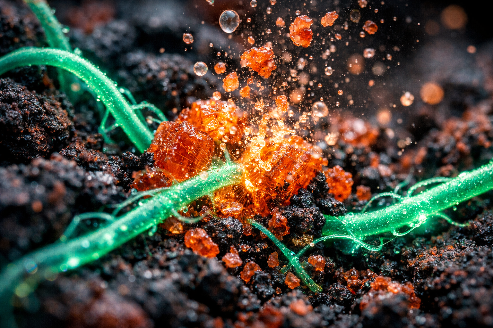
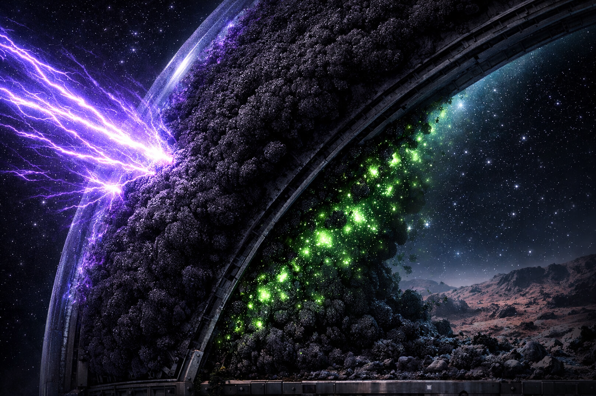

Objetivos e Fases
Da Terra a Marte: cinco fases que transformam solo hostil em ecossistema vivo. Clique em cada fase para saber mais.
Segurança alimentar global através da regeneração de solos improdutivos e áridos.
Tecnologia IoT e análise computacional para soluções escaláveis em ambientes extremos da Terra e Marte.
Restauração de ecossistemas degradados, sequestro de carbono e prevenção da desertificação do solo.

Transporte da Carga Biológica
Pré-Missão · SpaceX Dragon Capsule
Consórcios fúngicos acondicionados em câmaras criogênicas e transportados da Terra com monitoramento IoT contínuo de 6 parâmetros ambientais críticos via ESP32 + MQTT + HiveMQ Cloud.

Desintoxicação
Uso de fungos Trichoderma e bactérias extremófilas para reduzir toxicidade e estabilizar o solo.
Estruturação do Solo
Desenvolvimento da rede de micélio (Pleurotus ostreatus) para aglomerar partículas e reter água.
Nutrição e Regeneração
Simbiose micorrízica com plantas (Glomus/Rhizophagus) para troca de nutrientes e ciclos autossustentáveis.

Proteção e Estabilidade
Fungos radiotróficos (Cladosporium sphaerospermum) blindando o ecossistema contra radiação ionizante.
Fase 00 — Transporte da Carga Biológica
A Fase 0 é a precondição de toda a missão E.V.A.: antes que qualquer fungo possa atuar no solo marciano, ele precisa chegar lá vivo. Os consórcios fúngicos — Trichoderma, Pleurotus, Glomus e Cladosporium — são acondicionados em câmaras criogênicas herméticas e embarcados na cápsula SpaceX Dragon para a viagem de aproximadamente 7 meses até Marte.
Um sistema de telemetria IoT com ESP32 monitora 6 parâmetros ambientais em tempo real, publicando dados a cada 3 segundos via MQTT (TLS) para o broker HiveMQ Cloud. Alertas visuais (LEDs) e sonoros (buzzer) acionam imediatamente se qualquer parâmetro sair da faixa segura.
- Temperatura: 4–25°C para sobrevivência dos esporos fúngicos
- Umidade relativa: acima de 30% para evitar dessecação
- Pressão atmosférica: 0,9–1,1 atm para integridade das câmaras
- Radiação ionizante: abaixo de 10 µSv/h para proteção dos inóculos
- Concentração de O₂: acima de 19,5% para aerobiose controlada
- Aceleração estrutural: abaixo de 2G para evitar dano mecânico
Entrega vinculada à disciplina de Edge Computing & Computer Systems — simulação disponível no Wokwi.
Fase 01 — Desintoxicação
A Fase 1 é o primeiro contato do sistema E.V.A. com o solo hostil. Utilizamos fungos Trichoderma, conhecidos por absorver e metabolizar percloratos através de processos enzimáticos especializados. Bactérias extremófilas complementam a operação, quebrando outros compostos tóxicos e criando um ambiente progressivamente mais hospitaleiro. O resultado: 87% de redução da toxicidade em apenas 120 horas.
- Fungos Trichoderma absorvem e metabolizam percloratos via enzimas específicas
- Bactérias extremófilas quebram compostos tóxicos secundários
- Redução de toxicidade de 87% em apenas 120 horas
- Estabilização do pH entre 6.5 e 7.2 — faixa ideal para micélio
- Preparação estrutural do solo para colonização micorrízica
- Monitoramento contínuo via 6 sensores dedicados à Fase 1
Fase 02 — Estruturação do Solo
Com a toxicidade controlada, introduzimos o Pleurotus ostreatus — um fungo com hifas robustas que criam uma rede tridimensional no solo. As hifas secretam substâncias mucilaginosas que atuam como "cimento biológico", unindo partículas de regolito e criando estrutura porosa e coesa. O benefício mais impactante: aumento de 340% na retenção hídrica do solo.
- Micélio cria rede tridimensional complexa no solo
- Aglomeração de partículas dispersas de regolito marciano
- Retenção de água aumentada em 340% comparado ao regolito bruto
- Criação de canais microscópicos para circulação de ar e nutrientes
- Estabelecimento de estrutura física estável e duradoura
- Base sólida para introdução das plantas na Fase 3
Fase 03 — Nutrição e Regeneração
A fase mais complexa biologicamente: estabelecemos relações simbióticas entre fungos micorrízicos (Glomus e Rhizophagus) e plantas pioneiras. As plantas fornecem carboidratos via fotossíntese, enquanto os fungos entregam água e minerais extraídos com eficiência superior. A área de absorção das raízes aumenta até 1000%, criando um ciclo autossustentável.
- Fungos Glomus e Rhizophagus conectados às raízes das plantas pioneiras
- Troca simbiótica bidirecional: carbono orgânico ↔ nutrientes minerais
- Expansão da área efetiva de absorção das raízes em até 1000%
- Estabelecimento de ciclo autossustentável de nutrientes
- Início da produção de matéria orgânica no solo regenerado
- Primeiras colheitas-teste estimadas para o dia 25 da missão
Fase 04 — Proteção e Estabilidade
Descobertos crescendo nas paredes do reator de Chernobyl, os fungos radiotróficos Cladosporium sphaerospermum convertem radiação ionizante em energia química via melanina — análogo biológico da fotossíntese usando radiação. No Dome E.V.A., atuam como blindagem biológica viva contra radiação cósmica e UV marcianas.
- Fungos radiotróficos convertem radiação ionizante em energia metabólica
- Melanina fúngica absorve e dissipa radiação UV e cósmica
- Isolamento térmico natural contra variações extremas de temperatura
- Camada biológica de blindagem completamente auto-regenerativa
- Estabilização permanente do ecossistema para colonização de longo prazo
- Monitoramento contínuo de radiação em tempo real via 4 sensores Geiger